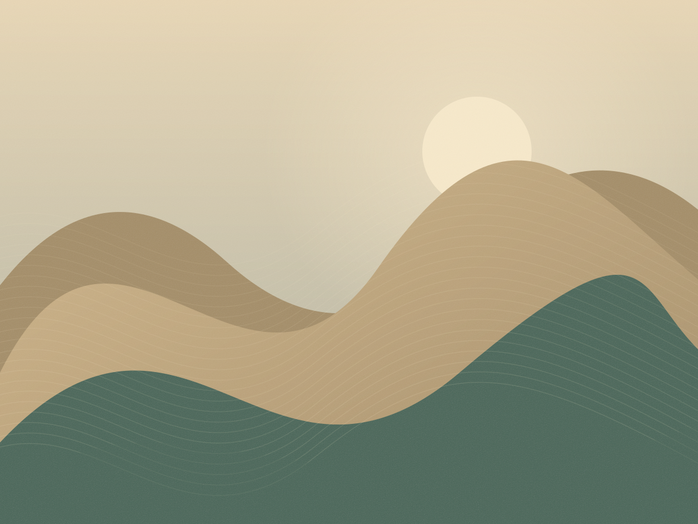
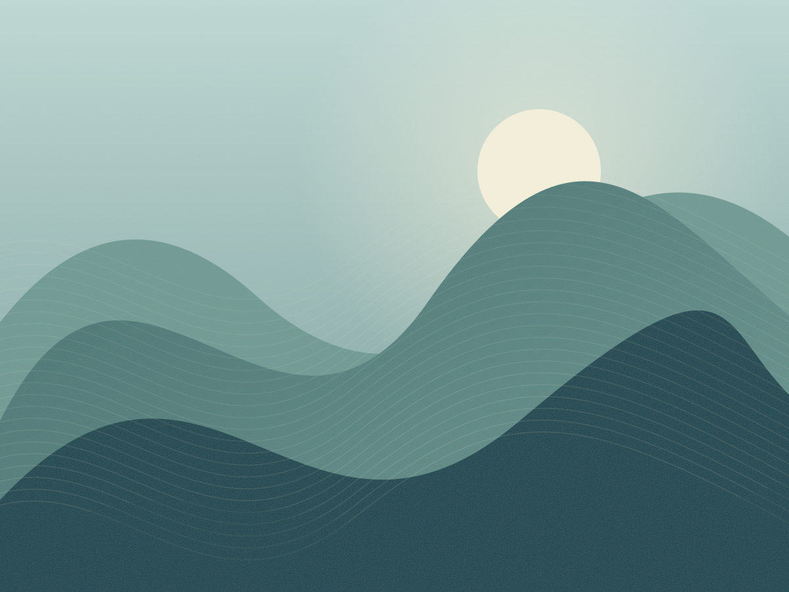
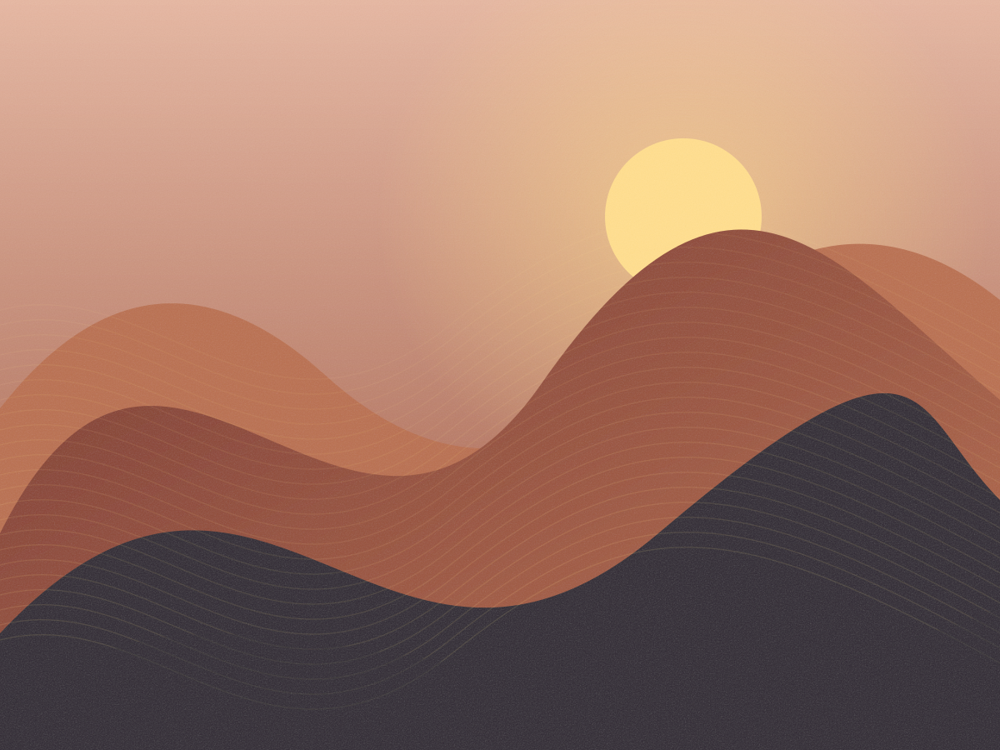

Start somewhere warm.
Each image is a texture. The shader bends the space between them.
Explore one interaction at a time.
Mouse followers, hover effects,
and scroll-driven animation studies.



Not another fade-in.
Seven ways to bend the ordinary.
Each card has its own hover, outline and transition. Click to change the image.
Hover to change the silhouette.
Click any image to melt into the next.
Three shapes. Three worlds each.
Ten distinct shapes, palettes and motions.
Move inside a card to try it.
Use it on the page, or copy it into yours.
Copy the snippet after your FlowFX script.
No extra CSS or dependency tags.
Mouse and pen input · native cursor stays usable · reduced-motion preferences respected · touch input does not spawn followers
Scroll slowly through each study.
Depth, ribbons, shutters, and a lens.
Scroll back to reverse the motion.
Keep scrolling. Three worlds blend
through a fluid displacement field.
Your scroll is the timeline.

Each image is a texture. The shader bends the space between them.
Continuous scroll progress becomes a noise-shaped, liquid transition.
Scroll back up. Every moment is reversible.
Copy an example. Add the CDN once. Make it yours.
Three.js is already inside the browser bundle.